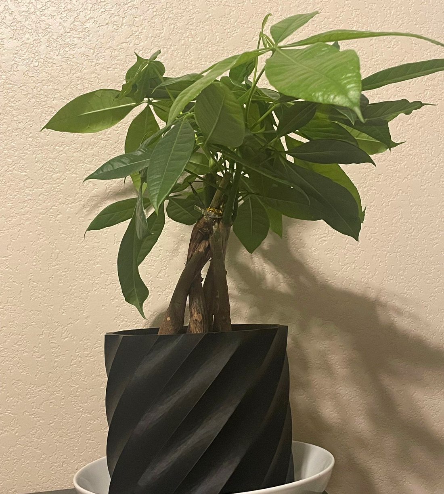

Autonomous Hexapod
A six-legged walking robot I designed in Fusion 360. I worked out the leg kinematics and servo torque, then programmed the walking gaits in Arduino C++.

Mechanical Engineering · Texas Tech University
I'm a mechanical engineering student (class of 2028) in Lubbock, TX. Most of my free time goes into robotics projects, and I'm also an undergraduate researcher working on lane-change models for autonomous vehicles.
Expected 2028
Bachelor of Science, Mechanical Engineering · GPA 3.95 / 4.00
A six-legged walking robot I designed in Fusion 360. I worked out the leg kinematics and servo torque, then programmed the walking gaits in Arduino C++.

A combat robot under 1 lb, built with a teammate. Most of the work was testing and troubleshooting until it ran reliably within the weight limit.

MATLAB models of how autonomous vehicles decide to change lanes, tuned against millions of data points from the highD and NGSIM driving datasets.
Sep 2025 – Present
Texas Tech University · Part-time · Lubbock, TX
Jun 2025 – Jul 2026
Amazon · Part-time · Lubbock, TX
Jul 2024 – Aug 2024
Big Chicken · Part-time · Lubbock, TX
SolidWorks, Fusion 360, Inventor, AutoCAD
Python, MATLAB, C/C++, Arduino, HTML & CSS
NumPy, Pandas, Matplotlib, Excel
Git, GitHub
I'm looking for internships and research opportunities. The best way to reach me is email.